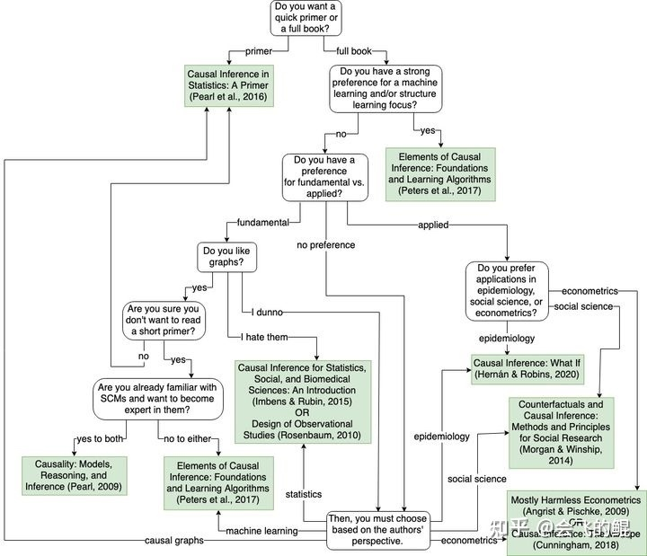
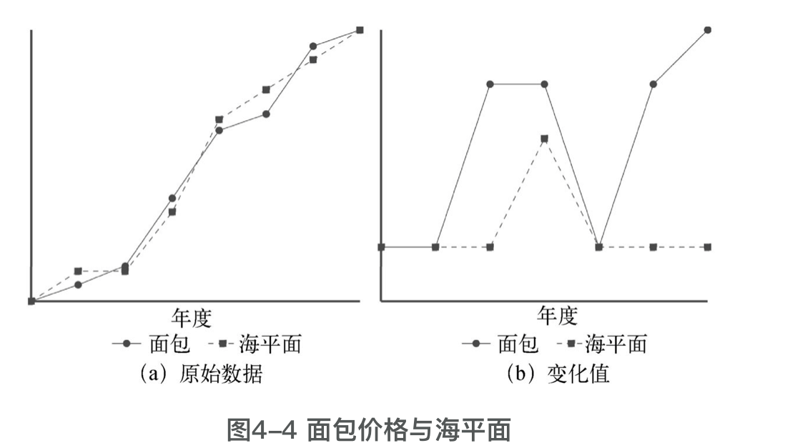

所属 Topic：因果推断 · 类型：案例
09. 资料：因果推断读书笔记与学习资源#
本文整合原 CausalAnalysis 目录下的读书笔记与学习资源，避免旧入口分散。
学习资源#
toread#
Causal Inference for the Brave and True
课程#
Brady Neal 因果推断导论，B站也有
https://www.bradyneal.com/causal-inference-course
reading#

tools#
https://zhuanlan.zhihu.com/p/405226148
- causalml
https://github.com/uber/causalml - dowhy
- econMl
https://github.com/microsoft/econml
他人学习总结#
读书笔记：《为什么：关于因果关系的新科学》#
作者简介：朱迪亚-珀尔
0. 导言-思维胜于数据#
因果关系演算/工具由两种语言组成：
- 因果图：用于表达我们已知的事物。除了因果图之外，也有别的方式，比如：
- 计量经济学家的数据方程
- 纯统计学家：一组假设
- 类似代数的符号语言：用于表达我们想知道的事物。
观察与干预#
例子: 假设我们想看药物D对病人生存期L的影响。
观察： P(L|D) 经典的条件概率
干预： P(L|do(D))
作者认为：
- 数据并非万能
- 经典统计学只关注总结数据；因果推断不仅揭示数据之间的关系，还提供了一种解决方法，反事实。
因果的优势：
- 回答基础的关联关系
- 因果解释、干预与反事实
- 适应性。
- 深度学习： 将函数与数据拟合
蓝图、研究框架#

【输入】
因果推断引擎是一种问题处理机器，可以接收中三不同的输入：假设、问题、数据
人： 直觉；机器：推断流程
【数据】
- 在根据假确定了因果模型，提出问题、导出被估量后才用到数据。数据是用来估计验证
-
只依靠数据无法解释因果
-
因果关系之梯#
因果关系的三个层级#

因果关系之梯 = > 业务落地方法论
- 发现关联关系，可能混杂，SOP指标体系，关联kpi指标(gmv,租金)
- 干预归因，找到factor，运营活动
- 反事实，预测Δ变动带来的增益
层级一：关联#
被动观察数据。
e.g：购买牙膏的用户同时购买牙线的可能性多大？ P(牙线|牙膏)
层级二：干预#
被动观察+主动改变
e.g: 如果我把牙膏的价格翻倍，牙线的销量额会怎么样？
实际收集到的数据无法回答这一问题。以往数据中涨价可能处于完全不同的原因，比如供不应求，行业竞争等未知因素。
P(牙线| do(牙膏))
层级三：反事实#
假设当时发生的事情与实际不同，结果会怎么样？
e.g. 假如我们 把牙膏的价格提高一倍，则之前买了牙膏的顾客仍然选择购买的概率是多少？
吃药后感冒好了，那么感冒好是因为吃药导致的吗，即如果我当时没有吃药的话感冒会好吗？
例子：

(1)关联问题：如果犯人死亡了，是否意味着法院下令处决犯人？
(2) 干预问题: 如果士兵A决定自己射击，而不是等待队长下令？(删除被指向箭头、干预A=true)
对比: 如果看到A射击了，则B也射击了；如果干预让A射击，则B是否射击不确定
(3) 反事实：假设A不射击，则犯人是否会死？
概率论与因果关系#
- 哲学家们使用概率提高来定义因果。 X 提高了Y的概率： P(Y|X) > P(Y)
问题：上述条件概率表示的是，如果我们观察到了X，那边Y的概率就提高了，但是这个提高完全可能是其他原因造成的，无法解决混杂。
- 背景因子修复 P(Y|X, K=k) > P(Y| K=k)
- 1983年，南希· 卡特赖特打破了这一僵局，她利用因果要素丰富了我们关于背景语境的描述。她提出，我们应该将所有与结果有“因果关联”的因子都视为条件纳入考虑
-
作者： do算子 P(Y|do(X)) > P(Y)
-
因果推断起源#
支线1
(1) 高尔顿板#
研究人的智力遗传，"因果"，身高遗传模型
Q: 他煞费苦心地编纂了605名英国“名门之秀”上溯4个世纪的家谱。但他发现，这些名门之秀的儿子和父亲并没有那么优秀，其祖父 母和孙辈也并非都是卓越人才。

额外发现： 身高-均值回归。 => 相关
根据达尔文学说，变异是代代相传的，那么我们是如何保持总体的稳定性？
哈代-温伯格平衡

(2) 皮尔逊#
皮尔逊观点：
- 因果关系被简化为相关关系的一种特例，r=-1或1
- 因果只是一种重复的、不可证的，相关关系是比因果更普遍的人类思维符号
支线2-休厄尔·赖特#
哈佛大学-遗传学-研究豚鼠的毛色
现象： 发现豚鼠毛色和孟德尔遗传定律想矛盾，很难产生纯色的毛色。

注：D: 发育因子， E：环境因子， H：遗传因子
路径分析
- 解决因果发现很困难
- 我们可以在探索模式下使用路径图，假设某些因果关系存在并据此计算出变量之间的相关强度估计值。如果这一估计值与实际数据相矛盾，那么我们就有证据说明我们假设的因果关系是
问题：
- 路径系数是线性的 => 非线性理论
- 要求研究者必须作出主观判断、绘制因果图，主观性。 => 贝叶斯连接
20世纪60年代： 经济学和社会学中路径分析的思想开始应用
- 社会学： SEM
-
经济学：联立方程模型
-
混杂和去混杂#
什么是混杂？#

处理方式： Z控制。 控制哪些？
方式1： 随机对照实验
- 消除了混杂偏倚
- 能够量化不确定性
- 使用受限，社会科学中很难实现
从因果角度来看随机试验：


随机化试验是模拟我们想知道的世界的一种方法
方式2：因果图方法：do算子、后门准则，前门准则。。。
混杂的新范式#
关于混杂的替代定义
- 声明性定义：混杂因子是与X和Y都相关的任何变量
- 过程性定义：根据统计检验来描述混杂因子的特征。
do算子和后门标准
作者认为： 混杂是指任何使P(Y|do(X)) ≠ P(Y|X)的因素。 观察的结果和干预的结果不一致
为了去除X和Y中的混杂，我们只需要阻断它们之间的每个非因果路径，而不去阻断或干扰所有的因果路径就可以了。更确切地说，我们将后门路径（back-door path）定义为:
所有X和Y之间以指向X的箭头为开始的路径；
如果我们阻断了所有的后门路径（因为这些路径允许X和Y之间的伪相关信息在管道中流通），则我们就完成了对X和Y的去混杂。
-
悖论#
蒙提-霍尔悖论#
对撞

辛普森悖论#
作者：
- 辛普森逆转
单纯的数据总结是看不出因果关系的，必须得看数据背后的生成机制!
例子1：BBG? => BBB

其实在进行总体的计算时候，聚合方式有问题，应该按照男女分层的真实比例来加权计算。这个案例中，对照组和实验组的男女比例很悬殊。

例子2: 无需分层，汇总结果即可


例子3：

解读：像往常一样，要决定运动是有益的还是有害的，我们需要考察数据背后的故事。数据显示，总体中年龄越大的人运动得越多。因为更可能发生的是年龄影响运动，而不是反过来。同时，年龄可能对胆固醇水平也有因果效应。因此我们得出结论，年龄可能是运动时间和胆固醇水平的混杂因子，我们应该对年龄进行变量控制。换言之，我们应该看的是按照年龄组别进行分层后的数据，并据其得出结论：无论年龄大小，运动都是有益的。
-
干预#
方法1： 后门调整公式
先估计去混因子在每个数据分成中产生的效应，然后计算这些层的因果效应的加权平均值。
方法2：前门标准
适用情况：我们无法收集到混杂因子(吸烟基因)的数据，因为缺乏混杂因子的数据，所以无法适用后门准则的方法。可以收集到的数据是X->M->Y, 三者的数据都有

前门调整和后门调整的最终目的都是根据P(Y|X,A,B....)这些不涉及do算子的数据来估计干预效果P(Y| do(X))
**方法3：**一般意义上do演算-一个“干预”量何时可以简化为一个“观察”量
基础规则：
- 规则1：如果观测到W与Y无关(可能是以其他变量Z为条件),那么有：
- 规则2： 如果变量集Z阻断了从X到Y的所有后门路径，那么以Z为条件(对Z进行变量控制)，则do(X)等同于see(X).即如果Z满足后门标准，则有
- 规则3： 如果不存在只包含前向箭头的从X到Y的路径，则
后来有两个研究小组证明了：规则1-规则3足以让我们走出任何一个确有出口的do迷宫。完备性。
方法4： 工具变量

b=ab/a = r(ZY)/r(ZX)
工具变量满足以下条件：
- 与混杂变量无关
- 与目标变量Y不直接相关
-
和X之间强相关
-
反事实#
鲁宾 - 潜在结果
潜在结果或者反事实，是在个体层面而非总体层面上定义的
一个引入例子：#
想要研究在决定员工的工资殷祖中，更重要的是学历还是工作经验。EX表示工作经验，ED表示学历，S表示工资。假设学历水平只有0，1，2

方式一：线性回归。是靠数据驱动，而不是模型驱动。会有个问题，工作经验可能取决于学历，即回归会有多重共线性问题。
回归结果：

直接估计Ed=1时候 S=85000
方式2：因果

S=65000美元 + 2500美元X EX + 5000美元XED + Us
EX = 10-4ED + Uex
反事实：假设Ed从0变为1

因果推断第一定律：
结构方程模型
结构因果模型： 可以非线性
充分因与必要因
-
中介变量#
直接效应与间接效应
一种简单的情况，处理X, 结果Y，中介物M
CDE (受控直接效应)
CDE(0) = P(Y=1| do(X=1), do(M=0)) - P(Y=1| do(X=0), do(m=0)) # 中介物取值为0情况
最后一章，作者讨论了下人工智能和大数据的问题，作者主张强人工智能，认为现在还只到达了因果关系的第一层级.
【完结】
其他：
一个案例 https://zhuanlan.zhihu.com/p/384908734
系列学习笔记： https://blog.csdn.net/sinat_26917383/category_11123072.html
《别拿相关当因果》
《社会科学因果推断的理论基础》
读书笔记：《别拿相关当因果》#
因果读书汇总
1. 原因#
什么是原因
大卫-休谟
- 何为原因？如何才能找到原因
- 经常性事件，原因在时间上早于结果，原因和结果在时间和空间上距离相近
康德
- 必然性是因果关系的基本特征
- 无法凭经验推理出事物之间的必然联系，也就无法通过观察归纳出事件发生的原因
- 他认为我们可以用一种先验知识去阐释我们所观察到的因果关系
怎么找到原因？
- 20世纪六七十年代
- 某种结果的产生是由一系列的条件共同导致的
- 概率法，原因知识提高了某种结果出现的可能性
- 20世纪80年代-Judea Pearl 因果图
因果关系的学习主要通过两种方式：
- 感知。物理事件和社会性事件，人们对社会性事件的感知是会受到文化差异的影响的
- 推理
2.时间#
休谟处理非对称性问题的方法是，默认原因和结果不可能同时发生，而且原因必须先于结果发生
随时间变化的两个序列可能存在相关性，比如威尼斯海平面和英国面包价格之间的关系。可以通过**差分**解决

计算法与实验法#
现实中我们得到的很多数据都是观察数据，所以这一章主要讨论基于什么样的观察数据可以做因果推断，以及怎么做。
总的来说，在下列假设中，图解模型表示的是因果关系。
- ❑ 一个变量的概率只取决于引起这个变量的原因（因果关系中的马尔可夫条件）。
- ❑ 所有共同的原因都要测量到（充分性原则）。
- ❑ 我们使用的数据准确地反映了变量之间真正的依赖关系（忠实性原则）。比如幸存者偏差